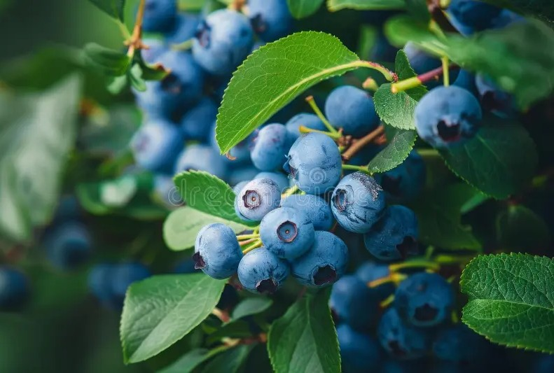

The Big Picture
The acre is divided into three zones...
Raised Beds
Raised beds will form the backbone of the annual garden...
Trellises & Vertical Growing
Vertical growing is essential in a forested environment...
Deer Protection Strategy
A permanent 7–8 ft fence will eventually surround the main garden...
Perennial Food Crops
- Blueberries
- Blackberries
- Strawberries
- Rhubarb
- Asparagus
- Cherry tree
- Loquat tree
- Apricot trees

Year‑Round Food Plan
The goal is to preserve as much as possible...
Phased Build Roadmap
- Phase 1: Initial beds, temporary fencing, first perennials
- Phase 2: Permanent fencing, expanded beds, compost system
- Phase 3: Fruit trees, perennial patch, irrigation
- Phase 4: Greenhouse, rainwater catchment, pantry optimization
Future Add‑Ons
- Greenhouse
- Cold frames
- Outdoor wash station
- Herb‑drying area
- Root‑cellar alternatives